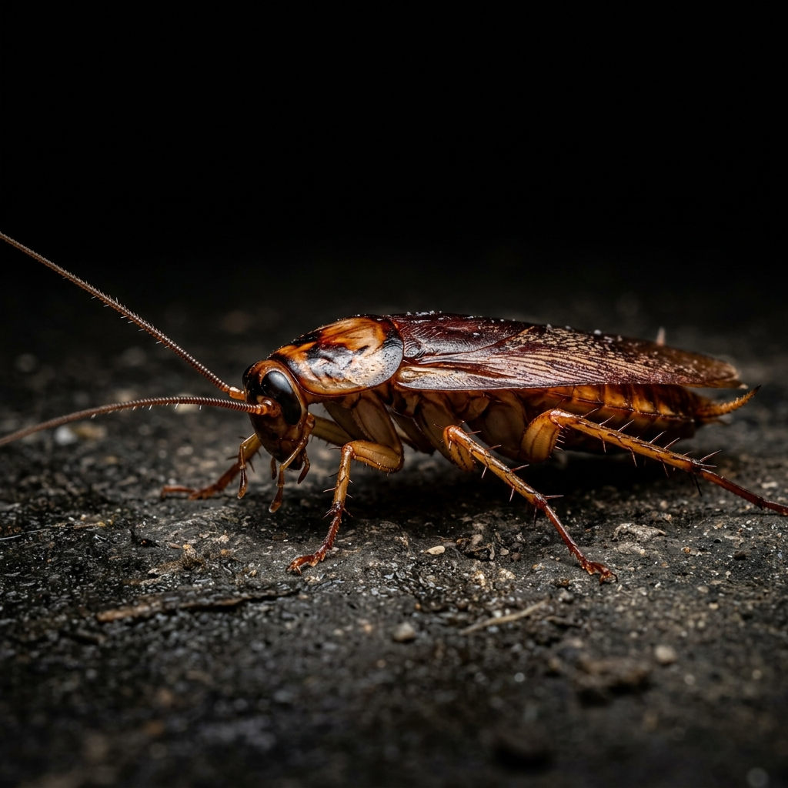
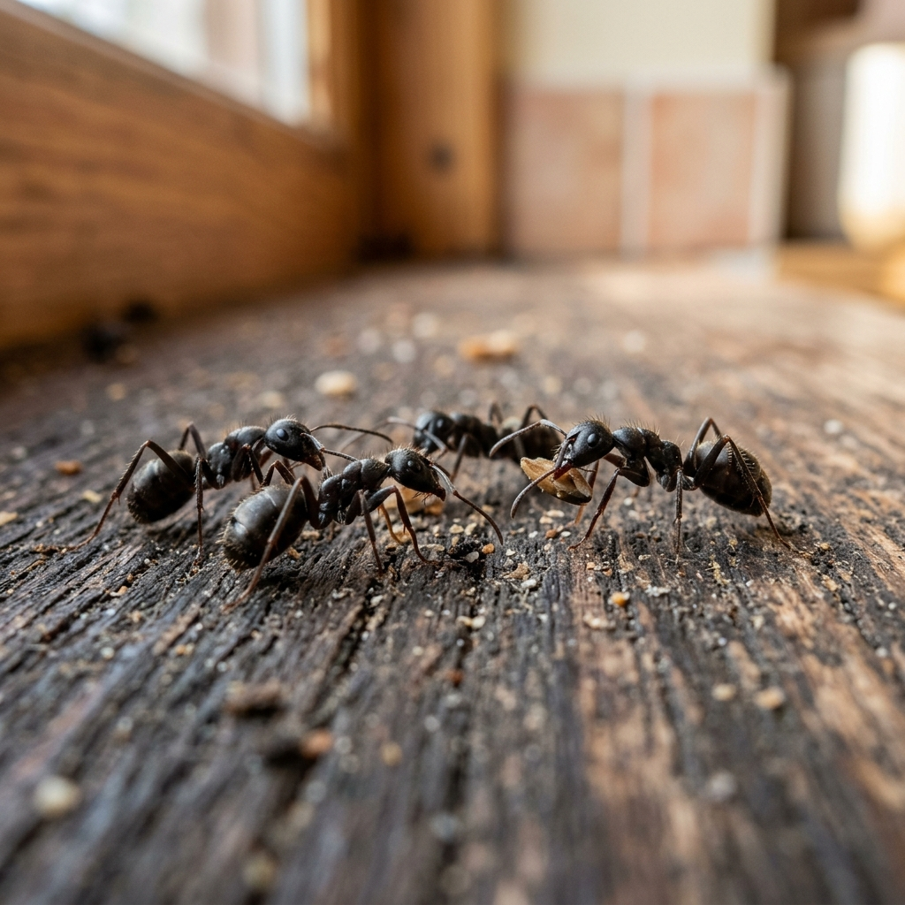
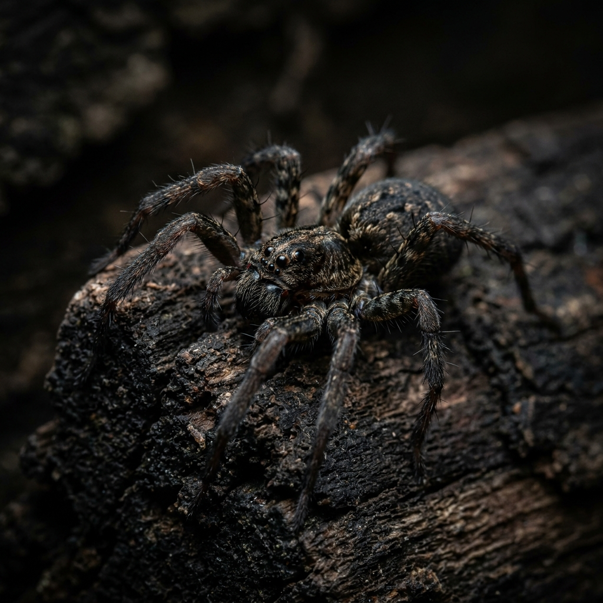
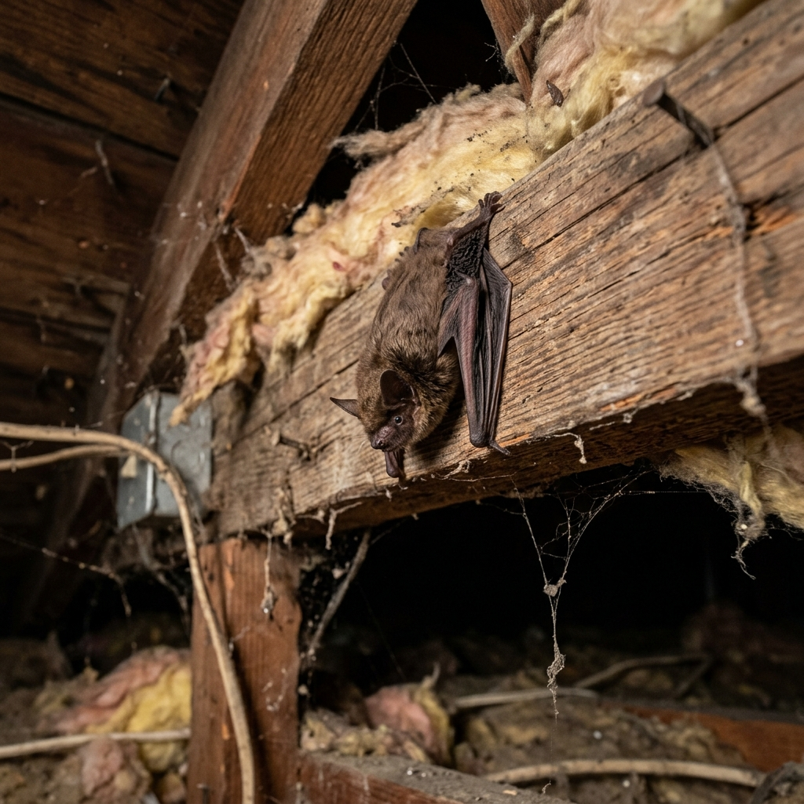
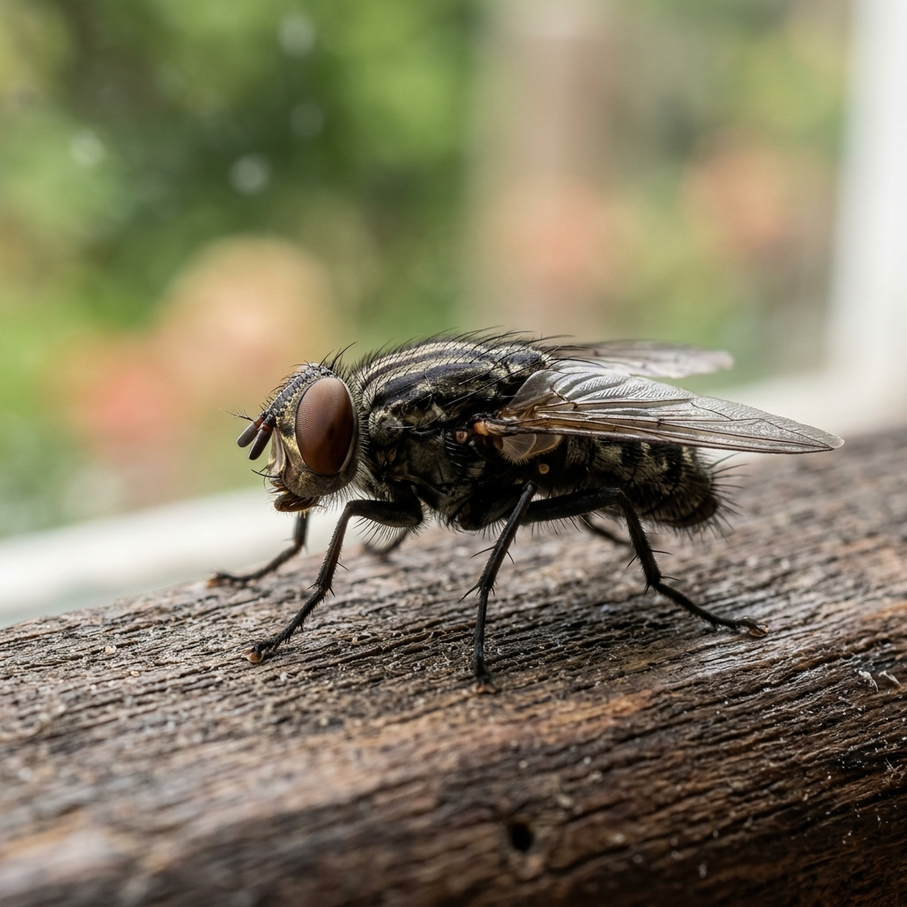
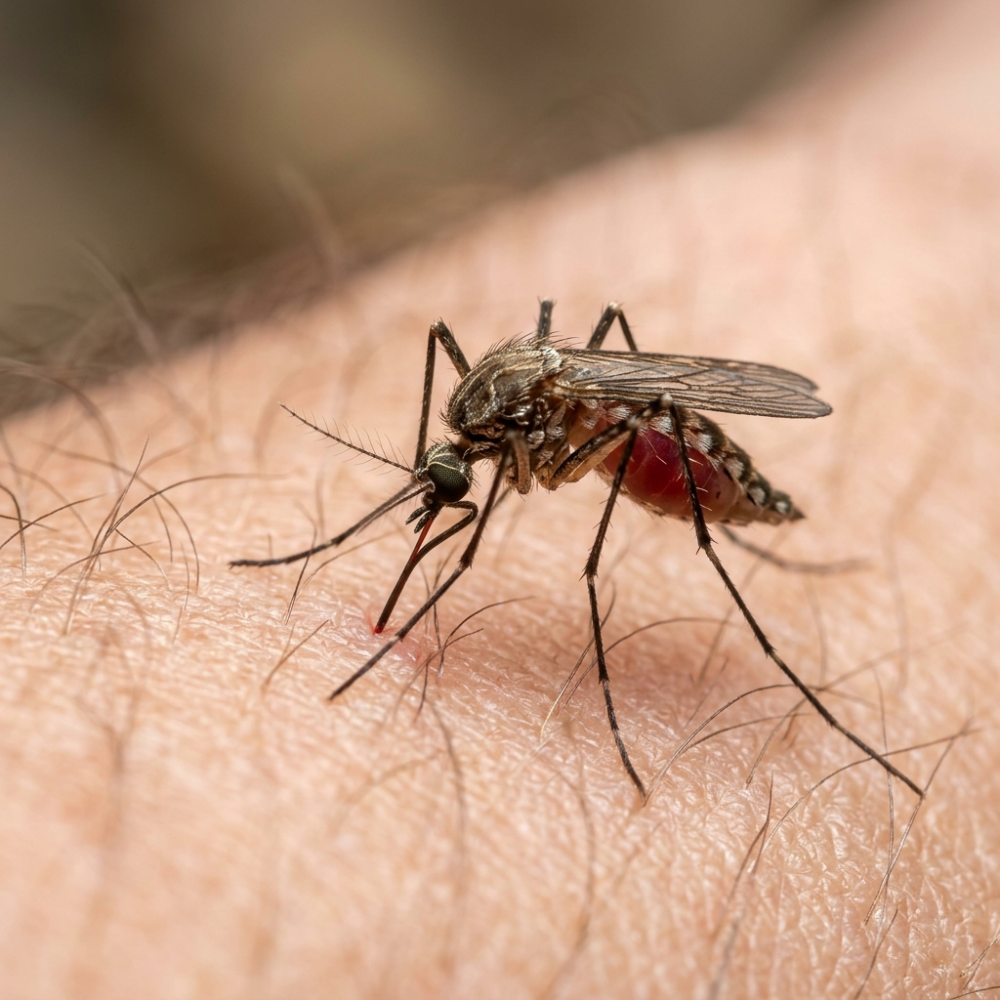

Baratas, formigas, aranhas, morcegos, moscas e pernilongos exigem tratamentos diferentes. Veja como identificamos e eliminamos cada uma com segurança para sua família.
As baratas estão entre as pragas mais resistentes e indesejadas dos ambientes urbanos. Vetores de mais de 40 tipos de bactérias, incluindo as causadoras de salmonelose e E. coli, elas contaminam alimentos, utensílios e superfícies só de passar por cima.
Encontram abrigo em frestas, ralos, eletrodomésticos e tubulações — e se reproduzem rapidamente, tornando o controle ainda mais urgente.

Combinamos gel inseticida de ação lenta, aplicação residual e, quando necessário, fumigação eliminando adultos, ninfas e ovos em um único ciclo.

Usamos iscas atrativas que as próprias operárias levam até a rainha, eliminando a colônia pela raiz, complementado por barreira química nos pontos de entrada.
As formigas formam colônias inteiras dentro de paredes, jardins e fundações, com uma ou várias rainhas produzindo milhares de operárias continuamente.
Além de contaminar alimentos, algumas espécies podem causar prejuízo em instalações elétricas ao se alojarem em fiações.
Algumas espécies, como a aranha-marrom e a viúva-negra, têm picadas que podem causar sérias complicações de saúde — especialmente em crianças e idosos.
Costumam se esconder em áreas pouco movimentadas: garagens, porões, caixas de entulho e atrás de móveis parados.

Tratamento perimetral com inseticida residual de longa duração, atingindo os esconderijos mais comuns da espécie identificada, com segurança para moradores e pets.

Realizamos espantação humanizada seguida da vedação técnica de todos os pontos de acesso, impedindo o retorno sem causar dano aos animais.
Morcegos alojados em forros, telhados e beirais acumulam fezes (guano) que gera odor forte e risco de contaminação, além do potencial de transmitir raiva.
Por serem protegidos por lei, exigem uma abordagem humanizada — eliminar não é permitido nem necessário; o segredo está em afastá-los e impedir o retorno.
As moscas pousam em lixo, esgoto e fezes antes de pousar na sua comida, carregando bactérias que causam desde diarreia até doenças mais graves.
O problema raramente está só nos adultos voando pela casa — geralmente há um foco de larvas (lixeiras, ralos, matéria orgânica) alimentando a infestação continuamente.

Combinamos armadilhas UV para os adultos com inseticida residual e eliminação dos focos de larvas, cortando o ciclo reprodutivo na origem.

Nebulização para eliminação imediata dos adultos, aliada à identificação e eliminação de criadouros no entorno do imóvel, para um controle duradouro.
Além da coceira incômoda, os pernilongos são vetores de doenças sérias como dengue, zika e chikungunya — um risco real para toda a família.
Se reproduzem em qualquer água parada, de pratinhos de planta a calhas entupidas, o que torna a eliminação de criadouros tão importante quanto o combate aos adultos.
Entre em contato e solicite seu orçamento gratuito de dedetização.